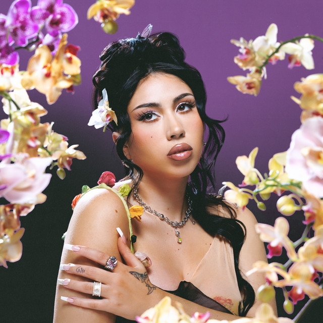

KALI UCHIS
Nació en la ciudad de Alexandria, (Virginia, Estados Unidos) en 1994.Comenzó la escuela primaria en Pereira, Colombia y regresó a Estados Unidos en tercer grado de primaria a la edad de 9 años. Sus primeros pasos en la música fueron a temprana edad cuando creció en el sistema escolar de Alexandria, su ciudad de nacimiento, además tocaba el saxofón y el piano en la adolescencia.
Desde temprana edad, comenzó a interesarse en el mundo de la música y durante su etapa en la secundaría comenzó a grabar varios demos con la intención de difundir su nombre, pero no obtuvo resultados, por lo que decidió terminar con sus estudios para comenzar su carrera de manera profesional en Estados Unidos.
Después de lanzar varios demos por medio de internet, decide debutar con la canción «Know What I Want» en 2014, además de colaborar con el rapero Snoop Dogg en la canción «On Edge», de su mixtape That's My Work 3; publicado también en 2014. En febrero de 2015, publicó su primer EP titulado Por Vida, lanzado gratuitamente en su sitio web; el cual contó con canciones como «Rush» y «Loner» con las que la cantante pudo posicionarse dentro del ámbito musical y conseguir contratos con sellos discográficos, además el sencillo «Sycamore Tree» fue utilizada para la promoción de la sexta temporada de la aclamada serie American Horror Story.
Publicó su primer álbum de estudio, Isolation en 2018, el cual experimentó ritmos como funk, soul, entre otros; además de ser escogido por la revista Rolling Stone como unos de los mejores álbumes lanzados en ese año. En 2019, lanzó el sencillo «10%» con el rapero Kaytranada, la cual fue galardona con el Grammy a Mejor Interpretación Dance, siendo la primera colombiana en ganar un Grammy estadounidense en una categoría no latina.
En 2020, comenzó lanzando el EP titulado To Feel Alive, el cual fue grabado durante la cuarentena de ese año y mayormente son demos, tiempo después, lanzó su segundo álbum Sin miedo; el cual contó con el sencillo «Telepatía» que se volvió viral en la plataforma TikTok, por lo que la artista lanzó el video musical. La canción llevó a la cantante a presentarse en The Tonight Show, del presentador Jimmy Fallon, el 9 de abril de 2021.